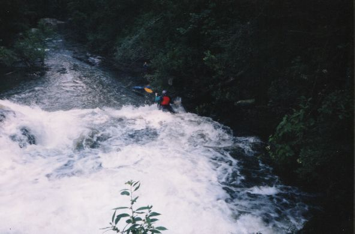
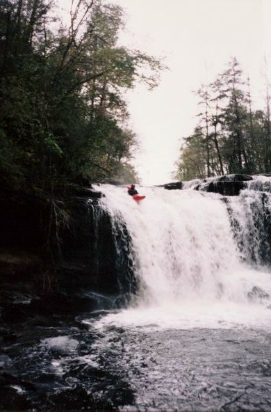
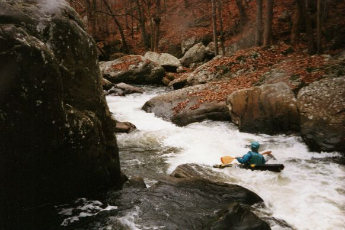
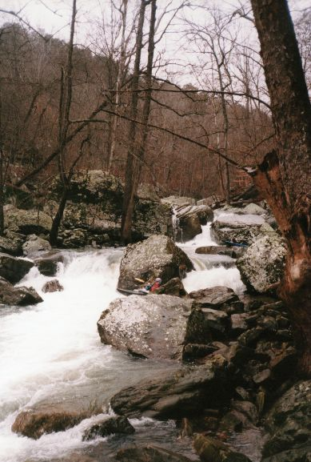
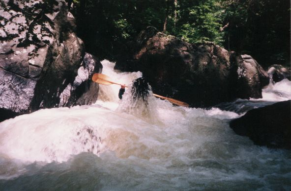
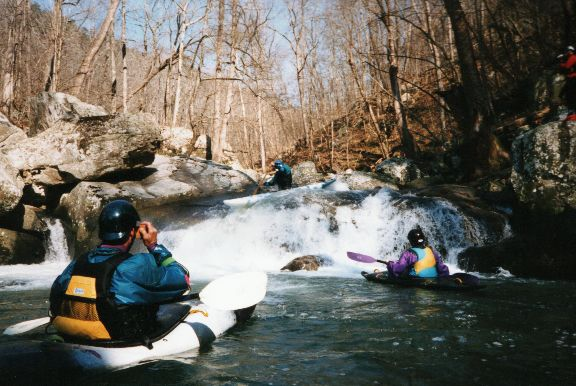
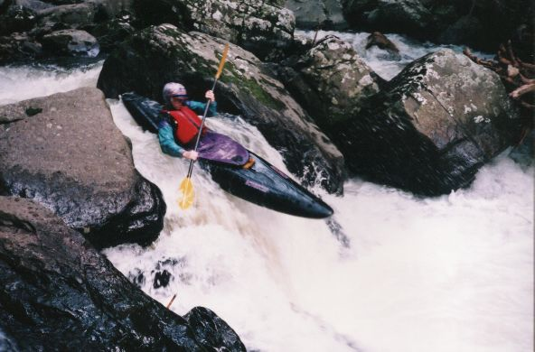
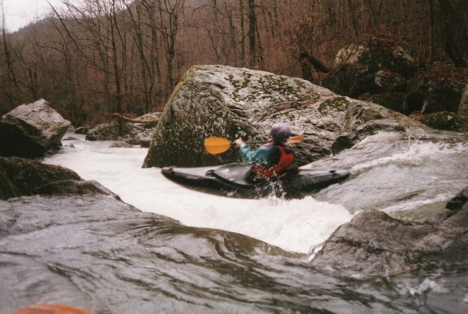

|  | Ron on approach to falls, eight inches? |
|  | One of the Vest's on the falls good line , seven inches? |
|  | We call this The Gulley it is just before Casey Jones. Eddy on the right at the end of it to avoid a slot on river left which is undercut on the left |
|  | Ron at beginning of #2 |
|  | Sloan backendering out of slot(#4) |
|  | Even c-boaters can run Jones |
|  | Ron on #8 with better h20 |
|  | Ron on a small drop near the end of the steep stuff |